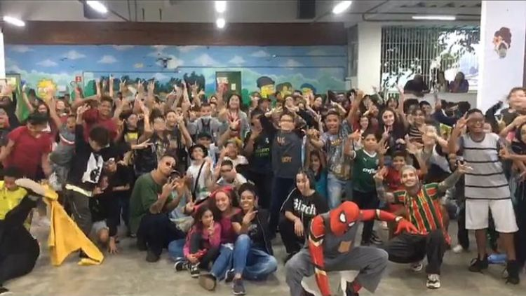
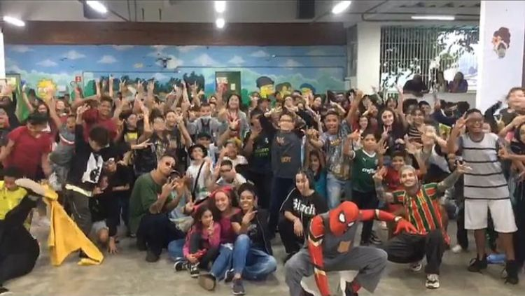

GERAÇÃO ARTÍSTICA
O que é a chapa Geração Artística?
A Geração Artística é muito mais do que apenas uma chapa, somos um todo, não somos apenas alunos que procuram uma melhoria para escola, nós iremos melhorar a escola, e com essa garra e força de vontade que estamos procurando diversas formas de deixar os alunos mais interessados.
Queremos que vocês se lembrem que fomos os alunos que fizemos uma revolução nessa escola, que fizemos a Arte ser mais vista, a cultura mais valorizada e um ambiente onde todos são respeitados e ouvidos.
A chapa Geração Artística foi criada com o objetivo de mudar a escola, de trazer mais sobre a Arte e toda nossa cultura, criada para mostrar mais do que os alunos já viram e ouviram sobre Arte. Formamos ela para conseguir dar voz aos alunos que não são ouvidos, fazer com que todos tenham os mesmos direitos, oportunidades, e que todos desfrutem de tudo, fazer com que todos sejam ouvidos e para que assim podemos transformar a escola em algo mais dinâmico e com que vocês gostem de participar mais dela.
"Somos uma revolução artística que será apreciada apenas pelos olhos daqueles que amam a arte. Somos a Geração Coca-Cola."
Quais as principais propostas da chapa?
A chapa tem diversos projetos com ideais ótimos, sempre com o intuito de educar, passar um ensinamento e divertir os alunos, para todos conseguirem saber das propostas vamos listar elas:
- Campeonatos educacionais; a ideia é fazer gincanas de conhecimento gerais para os alunos, fazer com que eles aprendam de uma forma mais dinâmica e também ganhem um prêmio com isso, seja pelo aluno que ganhou o campeonato de gramática, cálculos, história e entre outras matérias as quais são ensinadas.
- Campeonatos esportivos com mais frequência e valorização, disputas de vôlei, futebol, basquete, handebol, queimada, corrida e podendo até acontecer competições contra outras escolas, e terá campeonato tanto para os meninos quanto para as meninas.
- Palestras frequentes, queremos trazer pessoas novas para ensinar outras coisas para os alunos, trazendo sempre alguém diferente para passar uma nova informação e ensinar algo que talvez os alunos possam até se interessar mais.
- Eventos culturais, um dos nossos maiores focos vai ser nesses eventos, onde iremos trazer artistas que iram trazer apresentações, iram ensinar coisas para os alunos e fazer com que eles participem do evento também. Nesses eventos iremos trazer, batalhas de rima, batalhas de dança, alunos tendo o direito de trazer qualquer tipo de apresentação e trazendo artistas para apresentar também.
- Tristeza faz (p)arte; é um projeto original da chapa, criado com o objetivo de ajudar mais na saúde mental dos alunos e também dos funcionários, onde irá acontecer uma feira cultura para os alunos fazerem uma exposição de suas artes, dos sentimentos que eles acabam por deixar a mostra em hábitos do dia a dia, como desenhar, pintar, escrever, cantar ou dançar.
- Transformando vidas é outro projeto da chapa, onde iremos arrecadar brinquedos, roupas, e iremos doar tanto para orfanatos e pessoas que precisam daquilo. Também queremos levar peças de teatro para crianças órfãos, ou que estão internadas nos hospitais, para que elas possam se divertir e se sentirem acolhidas.
- Jornal estudantil, pensado com o intuito de deixar os alunos informados do que acontece não só na escola, mas fora dela também, na nossa cidade e estado. Eventos que acontecem, oportunidades de emprego como jovem aprendiz, coisas que acontecem na política, e até fofocas. Sempre com o intuito de informar o aluno.
- Por último, queremos melhorar a biblioteca da escola, trazer mais livros de estudo e famosos, para que os alunos consumam do que eles tem.
JORNAL

Escrito por: Giulie Gabrielly e Vitória Marques.
EVENTOS
Os eventos que iram acontecer na escola serão de:
- Dança
- Música
- Teatro
- Exposição de fotos
- Feiras culturais
- Competições entre os alunos/salas
Os eventos vão ter as datas decididas e serão divulgadas por aqui e vocês poderão tirar dúvidas com a direção ou com os integrantes da chapa. Além disso, os registros de cada evento irá ficar guardado aqui e também no Instagram da chapa.
Queremos que todas as séries tenham a oportunidade de ver os eventos, e esperamos que vocês colaborem para poderem desfrutar de tudo que vamos fazer!
Uma apresentação surpresa que teve após a cerimônia de posse foi de dois grupos parceiros nossos, o The Legacy e o Maktub, registramos e vamos deixar as fotos por aqui mas também pode ser encontrada junto de mais vídeos no nosso instagram:
@geracao_artistica
Fiquem por dentro de tudo que acontece na escola pelo nosso site.
 
